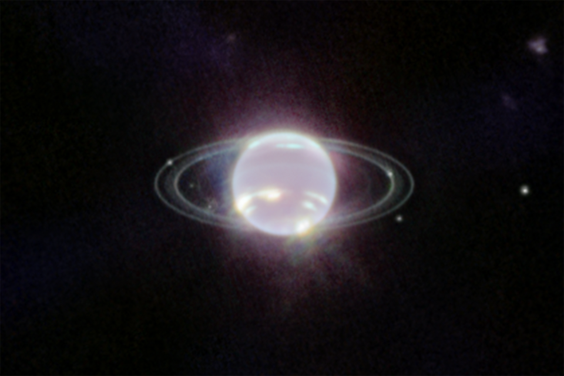

Температура на верхніх шарах атмосфери надзвичайно низька — близько мінус 220 градусів Цельсія, проте глибоко всередині планети тепло та тиск значно вищі. Атмосфера Нептуна надзвичайно динамічна, в ній спостерігаються потужні шторми і вітри, швидкість яких може досягати 2 100 кілометрів на годину — це найшвидші вітри серед усіх планет Сонячної системи.
Нептун — восьма і найвіддаленіша планета Сонячної системи, льодяний гігант, подібний до Урана. Його діаметр становить близько 49 500 кілометрів, а маса — приблизно у 17 разів більша за земну. Нептун складається з водню, гелію, водяного льоду та метану, який надає планеті блакитного кольору, поглинаючи червоне світло.
Нептун має систему кілець, які тонші й темніші, ніж у Сатурна, і важко помітні з Землі. Планета має 14 відомих супутників, серед яких найбільший — Тритон. Тритон обертається у зворотному напрямку, що свідчить про те, що він був захоплений гравітацією Нептуна. Тритон має геологічну активність і виділяє газові гейзери.
Нептун був відкритий у 1846 році не безпосередньо, а шляхом математичних розрахунків, які передбачили його існування через гравітаційні впливи на Уран. Єдиним космічним апаратом, який відвідав планету, є Voyager 2 у 1989 році. Незважаючи на віддаленість, Нептун продовжує цікавити астрономів через складну атмосферу, надзвичайні вітри та незвичайні супутники.